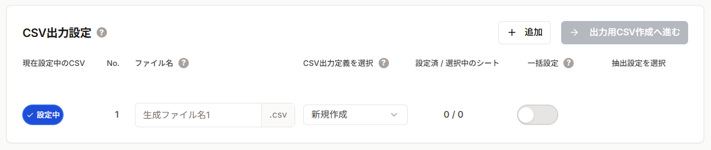
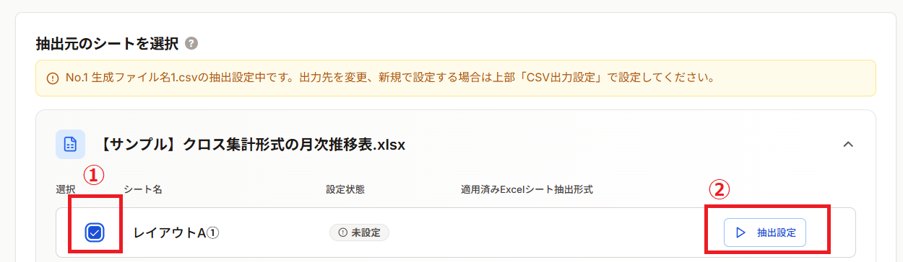
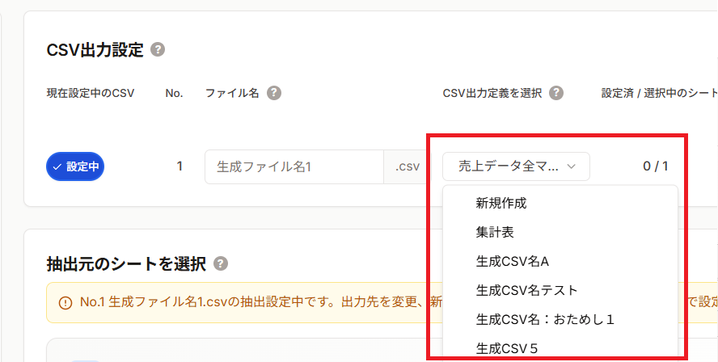
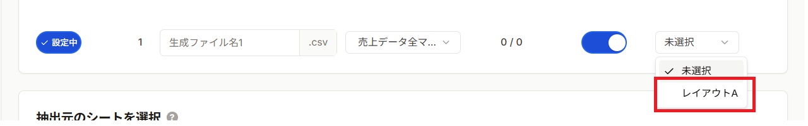
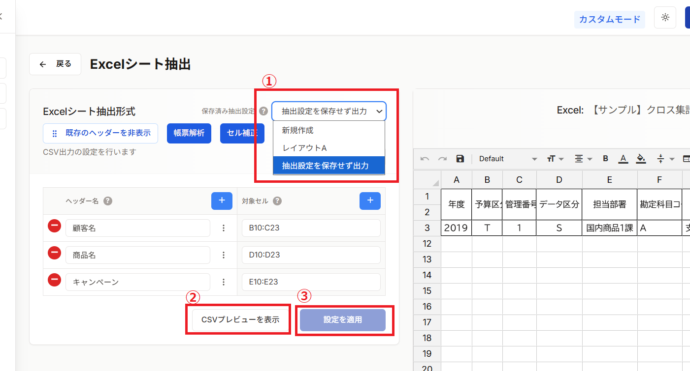

Excelファイルをアップロードした後、CSV出力の設定を選択します。新規に設定を作成するか、既存の保存済み設定を使用するかを選択できます。
CSV出力設定には2つの方法があります：
初めてこのExcelファイル形式を変換する場合や、新しい変換ルールを作成する場合に選択します。
以前に保存した設定を再利用する場合に選択します。同じフォーマットのExcelファイルを繰り返し変換する際に便利です。
CSV出力定義を選択で「新規作成」が選択されていることを確認。（初期値は「新規作成」になっています）

データの抽出元となるシートを選択し、抽出設定ボタンを押下します。

CSV出力設定を選択したら、次は基本的な抽出設定に進みます。ヘッダーとデータ範囲を指定しましょう。
CSV出力定義を選択で使用したい定義を選択します。一覧には以前に保存した設定が表示されます。

データの抽出元となるシートを選択し、抽出設定ボタンを押下します。
抽出元のExcelのレイアウトに合わせてExcelシート抽出形式を選択します。一覧にはCSV出力定義に基づいて保存されている定義が表示されます。

既存の抽出設定が表示されます。CSVプレビューを表示し、内容が問題なければ設定を適用してください。

CSV出力設定を選択したら、次はCSVのダウンロードに進みます。ダウンロードの詳細を指定しましょう。
CSV出力設定を選択したら、次は基本的な抽出設定に進みます。ヘッダーとデータ範囲を指定しましょう。